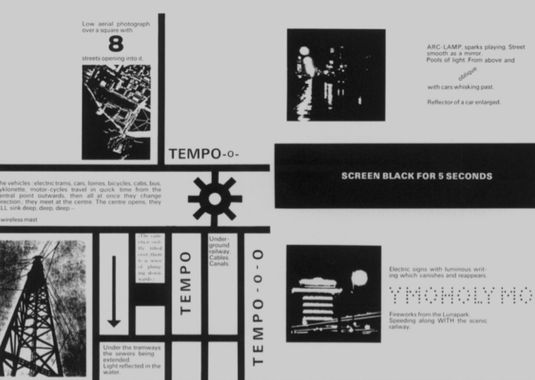

_Lasz ló Mono v-Nasv's schematic drawing or is proposed poly-cinema In which a rotatine orism located in front of a film proiector allows films to be seen simultaneouslY, overlapping at various points. creating intersects and the merging or aural and visual information

In 1921-1922 Monolv-Nagv created the film Dynamic of the Metropolis. Its purpose was to bring the viewer into the kinetics of the city through the vIsual association or events In space and time

Ludwig Hirschfeld-Mack created the Reflected Colour Display at the Bauhaus in 1922. In it he combines music and directed beams of colored light.